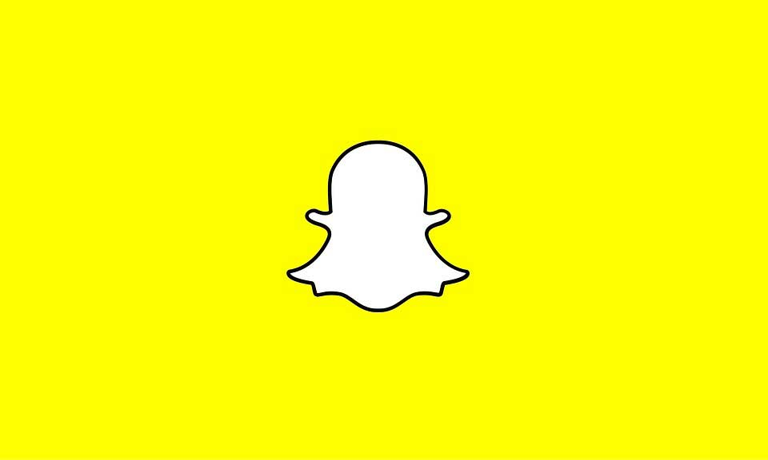

Snapchat a longtemps été « boudé » par les entreprises à cause de son approche trop enfantine. Aujourd’hui, pourtant, plusieurs grandes marques comme Coca Colas sautent le pas et sont présentes sur ce réseau.
Pourquoi les entreprises s’intéressent à cette plateforme ? Qu’est-ce que ça peut apporter à une entreprise ? Et surtout, que publier et de quelle manière ? Dans un premier temps il faut savoir que Snapchat est le réseau social préféré des 16-22 ans. Donc si vous commercialisez des services ou des produits ayant pour cible ce type de public n’hésitez pas foncez.
Après, certaines marques sont présentes sur ce réseau même si leur cible de marché est plus âgée. Pourquoi, quel intérêt, me direz-vous ? Et bien tout simplement, les jeunes d’aujourd’hui sont les consommateurs de demain et créer une relation privilégiée au plus tôt avec de futures clientes potentielles est un bon moyen d’assoir sa notoriété pour de futures ventes !
Que publier sur Snapchat ?
Ah ! La question difficile. Que publier sous Snapchat et quel langage adopté ?
Comme expliquer plus haut, les personnes utilisant Snapchat sont des jeunes entre 16 et 22 ans donc pour communiquer sur cette plateforme il faut utiliser un langage « jeunes », évitez un langage trop soutenu (attention, gardez bien à l’esprit que les expressions que vous utilisiez dans votre enfance seront difficilement d’actualité à notre époque !). Concernant le contenu voici une liste non exhaustive de contenu qui, je l’espère, vous donnera de l’inspiration :
- Les coulisses des bureaux
- Des concours
- La présentation des nouveaux employés
- Le quotidien des bureaux
- Les événements en direct
- Les actions menées
- Mannequin challenge
Vous l’avez compris, Snapchat est devenu en quelques années une vitrine incontournable où les marques et les entreprises doivent se trouver. Vous n’avez pas encore de compte n’hésitez plus sautez le pas !